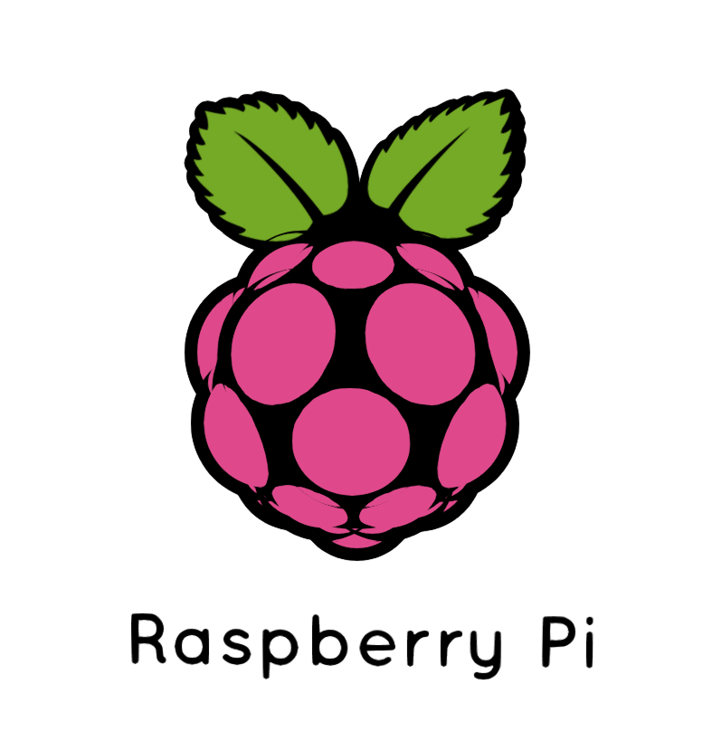

-

Raspberry Pi Communication
This side project went from a small inquiry to a massive undertaking as I became more and more interested in how to send data over a network. Essentially, I was able to access multiple Raspberry Pis, and the intention was to use real-time data to analyze what is happening in a room.
Naturally, the project appeared to be a simple one, but after doing some research and scouring some docs, I figured out that my goal was slightly more difficult than I had first thought. Despite the challenge, I was still able to write two classes for each of the Pis to run in the terminal. My client class used Python’s socket and pickle libraries to turn the dictionary into a byte stream and send it to the corresponding server class, which was set up to listen on the network and decrypt the received data. Once that was finished, I sent some data over our home internet to one of the Pis, and that Pi was able to run some calculations on the data.
While being a more intensive project than intended, I enjoyed every minute of it and was excited to see some programming that I made interact with the world.
-
Safety NET
Safety NET is a web application that allows first responders at Colorado School of Mines to communicate with students and professors on campus, and it is designed to be implemented on top of the existing Mines alert system for ease of use. The program is essentially a map generation tool that first responders can use, in the event of an emergency, to warn students of where to avoid and where safe areas are on campus.
Even though this project was developed for a class at CSM, my colleagues and I truly went above and beyond expectations with the implementation of our design. We spent many hours researching web development, URL generation, campus maps, and talking to stakeholders to arrive at our solution, and at the end of the semester, our hard work was rewarded with the satisfaction of earning first place in our section during the design competition.
-

Cryptocurrency Bot
After learning about cryptocurrencies and investing, I became curious about implementing a trading bot that would look at real-world market data and purchase/sell coins and stocks based on an analysis of the incoming data.
Crypto bot is a simple program that looks at certain markers like moving averages and support lines and attempts to time market trades. Naturally, for real-time data, I had to tie into a web API and access some data from the FTX exchange and other cryptocurrency exchanges. This was the largest part of the project, as I have never used an API before, but they are certainly useful, and there may be more projects involving APIs to come.